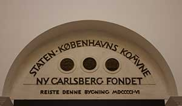
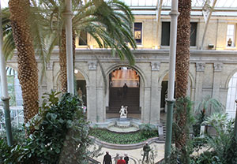

Country: Denmark
Language: Danish
Date of Visit: December 2016
How Did I Get Here?
Because no one in my family wanted anything for christmas, we decided to go on a trip instead of buying gifts. After a quick google search, it turns out Copenhagen is quite popular at christmas? So we booked a flight and packed our bags.
Highlights
Glyptotek Museum


This museum had many rooms filled with paintings, statues, and riches. It felt pretty empty when we went, but that may be because it is large. I spent hours here. My mother and I saw art from around the world including Egypt, Greece and of course Denmark.
Tivoli is an amusement park including various attractions including an aquarium, a light show, and tones of carnival rides. For christmas time, I found that the illuminations were the best part. At night, statues and trees are covered in christmas lights allowing visitors to wander around the art. Even the water is illuminated and music was playing over the speaker to add to the magical atmosphere. I think this place is best to visit with others as I saw many couples and families visiting the park.
The most common way I see people describe Smorrebrod is like a deconstructed sandwich. Just like sandwiches, smorrebrod involves bread and a variety of ingredients including (but not all together) salmon, herring, beef, cheese, shrimp, herbs, radishes, eggs, and more. Smorrebrod is a Danish special, so I recommend grabbing a few if you ever visit.